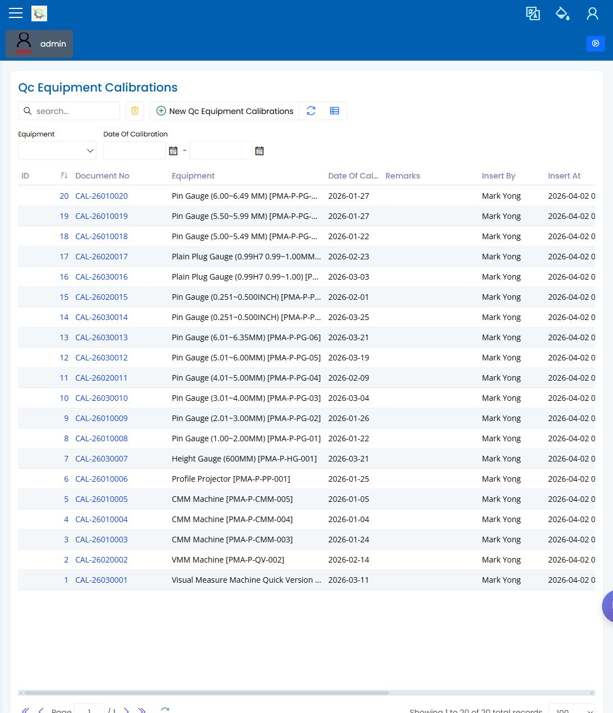

zh-CN/30-quality/equipment-calibration.md
设备校准
English | 中文
Path: Quality / Equipment Calibration URL: 待决（已有登录截图，但未记录准确部署路由）
页面用途
Equipment Calibration 用于复查测量设备的校准工作。质量复查人员通过该页面判断设备是否可用于检验，或是否需要在生产继续前跟进。
你会看到什么
- 带搜索和筛选条件的校准记录列表。
- 设备识别信息、校准日期、证书信息和备注。
- 用于复查或更新校准记录的表单或对话框。
- 用来确认设备准备状态的相关设备信息。
你会做什么
- 搜索设备或证书参考号。
- 打开校准记录并确认校准日期和下次到期日期。
- 检查证书或备注是否与现场实物设备一致。
- 如校准过期、缺失或不清楚，在检验使用前升级处理。
要检查什么
- 设备名称或编号与现场使用的设备一致。
- 校准日期对当前检验仍然有效。
- 复查需要时可以看到证书信息。
- 接受设备使用前，记录已保存。
常见问题
| 问题 | 含义 |
|---|---|
| 找不到设备 | 设备列表可能尚未包含该设备。 |
| 校准看起来过期 | 最新校准记录或下次到期日期可能未更新。 |
| 证书详情为空 | 校准证据可能尚未记录。 |
| 保存失败 | 屏幕上的必填字段可能缺失。 |
相关页面
截图
